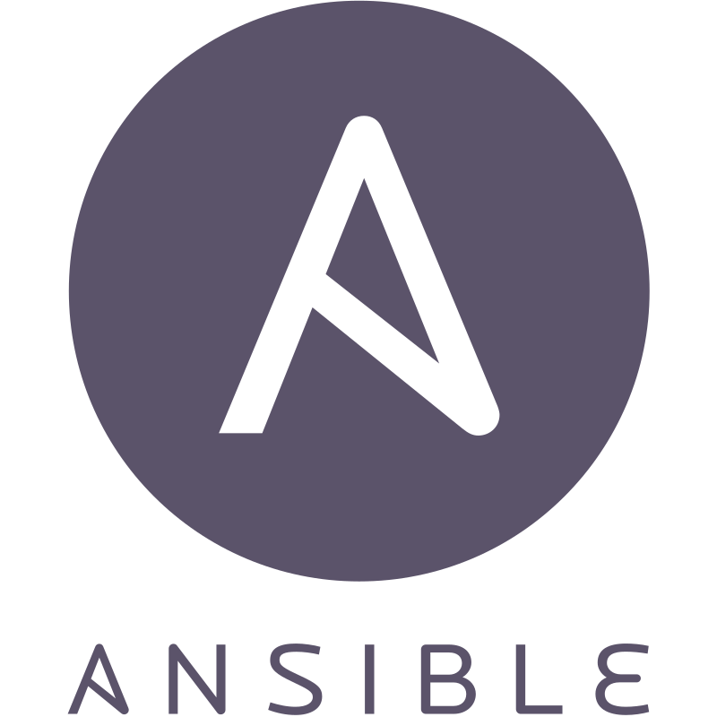
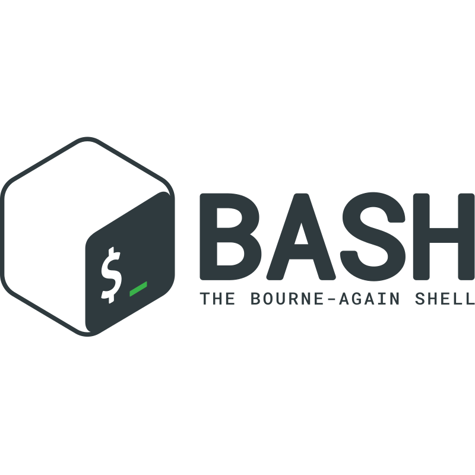
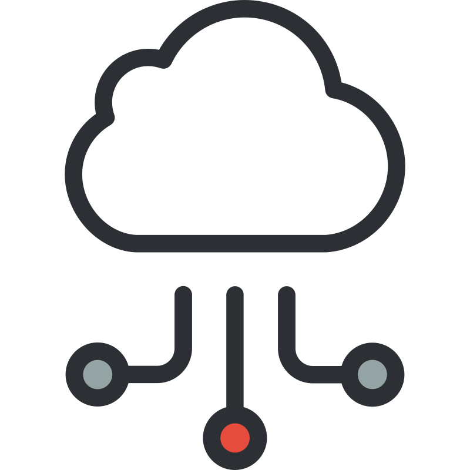

SAMUEL JAMES
Infrastructure
Operations Leader
Data Centers • AWS • Linux • Networking • Team Leadership
Infrastructure leader with 10+ years supporting mission-critical environments. I lead teams of 8–14 technicians, deploy and support thousands of servers and network devices, and drive operational excellence across data centers and AWS cloud environments.
CONNECT
- ✉ samueljamesinc@gmail.com
- 📍 South Bend, IN
- 📞 16016132249
- 🔗 github.com/SamuelSJames
- 💼 linkedin.com/in/samueljamesinc
- 🌐 samuelsjames.github.io/samjam-tech
NETWORKING FOCUS
CORE EXPERTISE
Operations
Engineering
Technologies
Infrastructure
Administration
& Scripting
Cabling
& Observability
👤 PROFESSIONAL SUMMARY
Strong background in Linux systems, networking, server and rack deployment, and cross-site infrastructure execution. Experienced in Cisco networking, VLANs, routing, switching, firewall configuration, fiber and copper cabling, and network troubleshooting. Skilled in AWS cloud operations, automation, and infrastructure optimization. Known for leading teams, streamlining processes, and delivering reliable solutions in high-availability, mission-critical environments.
</> FEATURED PROJECTS
AWS Operations Dashboard
Excel/VBA automation platform for deployment tracking, KPIs, resource allocation, and reporting across data center and cloud environments.
Home Lab Infrastructure
Proxmox cluster with Linux servers, networking labs, VPN, automation, and self-hosted services for testing and continuous learning.
Wellness Tracker
Full-stack fitness tracking application focused on habit formation, KPI tracking, and community accountability.
CERTIFICATIONS
- ✓ Cisco CCNET
- ✓ Cisco Certified Specialist (CCS)
- ✓ AWS Certified Cloud Practitioner
- ✓ Linux Engineering Certificate (Careerist)
IN PROGRESS
- ☐ Linux+
- ☐ AWS Machine Learning Engineer
CURRENT FOCUS
- AWS Infrastructure Operations
- WGU Cloud Computing Degree
- Linux Administration & Automation
- Network Engineering & Security
- Infrastructure Leadership & Architecture
CAREER TIMELINE
TOOLS & TECHNOLOGIES

Ansible
Bash
Wireshark